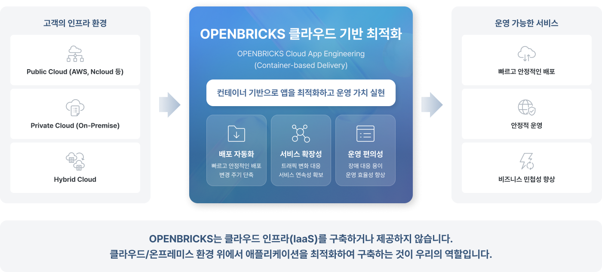
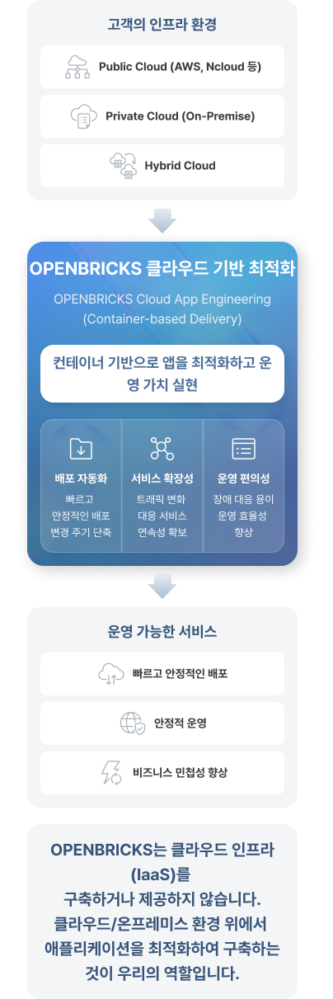
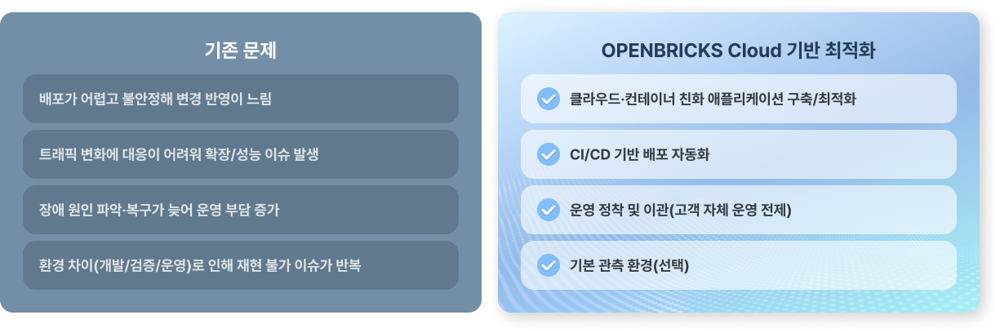
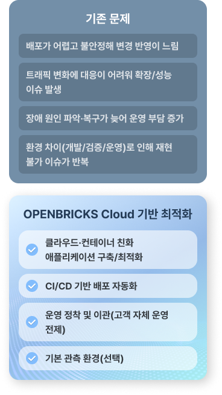
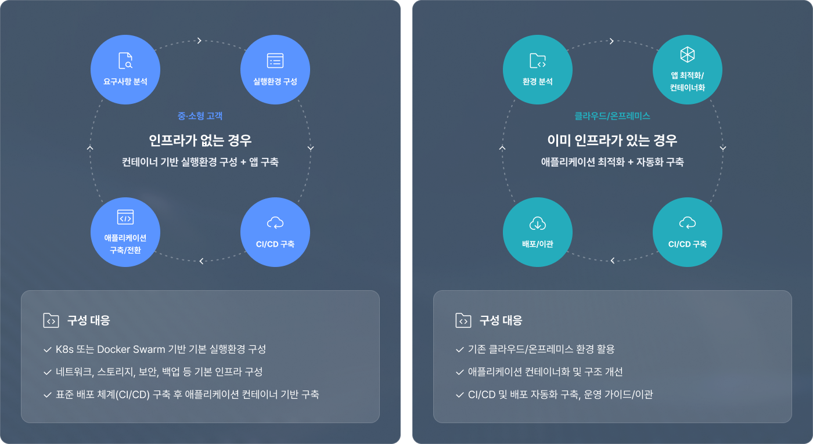
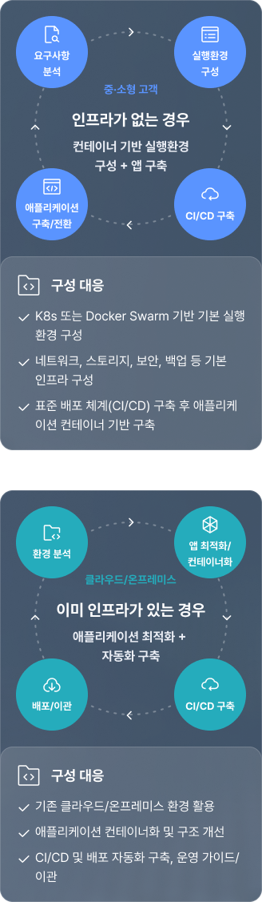

Cloud App Engineering
클라우드 환경에 맞춘
애플리케이션 최적화 및 서비스 구축
클라우드 환경에 맞춰 애플리케이션을 컨테이너 기반으로 최적화하고,
효율적인 CI/CD 체계와 유연한 확장성을 갖춘 지속 가능한 운영 환경을 구축합니다.
-
클라우드 인프라를 구축, 제공하기 보다,
클라우드/온프레미스 환경에서 애플리케이션을
최적화하여 구축하는 것이 우리의 역할입니다. -
OPENBRICKS의 Cloud App Engineering은 클라우드 환경에서 애플리케이션이 더 빠르게 배포되고,
더 유연하게 확장되며, 더 쉽게 유지보수될 수 있도록 클라우드·컨테이너 친화 구조로
최적화하여 구축하는 서비스입니다.
OPENBRICKS는 고객의 클라우드/온프레미스 환경 위에서 컨테이너 기반 실행환경을 준비하고,
애플리케이션을 배포 자동화(CI/CD), 확장성(Scale), 운영 편의성(장애/유지보수) 중심으로
설계·구현하여 운영 가능한 서비스로 전환합니다.
클라우드 기반 최적화
여러 채널/클라이언트와 서비스를 ‘연결 상태’로 유지하면서, 요청과 메시지를 실시간(동기) + 비동기(필요 시) 흐름으로 중계하는 연결 브릿지 허브입니다.


Why Cloud App Engineering
클라우드 기반 최적화
왜 필요할까요?
서비스 규모가 커지고 변경 주기가 빨라질수록,
기존 설치형/모놀리식 방식은 다음 문제로 이어지기 쉽습니다.


Cloud App Engineering은 단순 기술 도입을 넘어
배포·확장·유지보수 구조를 운영 친화적으로 재설계하여 문제를 해결합니다.
클라우드 기반 최적화 구축 범위
OPENBRICKS는 고객 환경과 일정에 맞춰 실행 가능한 범위로 다음을 수행합니다.
-
Step 01
앱 최적화 및 컨테이너화
앱 최적화 및 컨테이너화
애플리케이션 컨테이너화 서비스 구조 최적화 확장성(Scale) 설계 및 적용 장애/유지보수 편의성 강화 (로깅, 예외처리, 재시도 등)
-
Step 02
CI/CD 기반 배포 자동화
CI/CD 기반 배포 자동화
빌드/테스트 자동화 배포 파이프라인 구축 환경별 배포 관리(dev/stage/prod) 승인/검증 프로세스 적용
-
Step 03
운영 정착 및 이관
운영 정착 및 이관
모니터링/로그/알림 기준 정리 표준 운영 절차(Rundbook) 장애 대응 및 블랙 절차 수립 운영 가이드/ 교육 및 이관 (고객 자체 운영 전제)
-
Step 04
기본 관측 환경(선택)
기본 관측 환경(선택)
시스템/애플리케이션 모니터링 로그 수집/시각화 구성 주요 지표 및 알림 설정
클라우드 기반 최적화, 왜 OPENBIRCS인가
OPENBRICKS는 단순 컨테이너 도입을 넘어, 클라우드 환경에서 실제로 발생하는 배포 불안정, 확장 한계, 장애대응 및 유지보수 부담까지 고려합니다.
앱 구조와 배포 체계를 운영 친화적으로 재설계하여,
클라우드 최적화와 안정적인 운영 체계 구축을 지원합니다.
-
01
CI/CD 기반 배포 자동화 중심의 실행형 구축
-
02
확장성(Scale)과 운영 편의성 중심의 구조 최적화
-
03
고객 자체 운영을 전제로 한 운영 정착/이관까지 포함
-
04
실시간 모니터링을 기반으로 운영 안정성 확보
Cloud App Engineering Approach
클라우드 기반 최적화 구축 방식
OPENBRICKS는 고객의 현재 상태에 따라 접근을 나눕니다.


규모와 요구에 따라 Kubernetes 또는
Docker Swarm 중 최적의 기술을 선택합니다.
서비스 가능한 컨테이너 인프라 구축
모든 고객사가 처음부터 무거운 쿠버네티스를 감당할 수 있는 것은 아닙니다.
Docker Swarm을 통한 효율적 구성은 중소·중견 규모 SI 프로젝트와 빠른 초기 구축에 적합합니다.


클라우드 기반 최적화 기대 효과
OPENBRICKS는 배포 자동화와 유연한 확장 구조를 통해 서비스의 안정성을 높이고,
환경 간 격차를 해소하여 일관된 배포 체계를 구축합니다.
단순한 기술 도입을 넘어, 비즈니스의 연속성과
성장을 보장하는 최적의 클라우드 환경을 완성합니다.
-
01
배포 자동화로 변경 반영 속도와 안정성 향상
-
02
트래픽 변화에 유연한 확장(Scale) 구조 확보
-
03
장애 대응/유지보수 관점에서 운영 편의성 개선
-
04
환경 차이 감소로 재현 가능하고 일관된 배포 체계 구축
-
05
변경과 확장에 유연하여 지속 가능한 애플리케이션 구조 확보
Beyond Systems,
We Connect Business
오픈브릭스는 AX 기반 시스템 통합으로
시스템을 넘어, 비즈니스를 연결합니다.